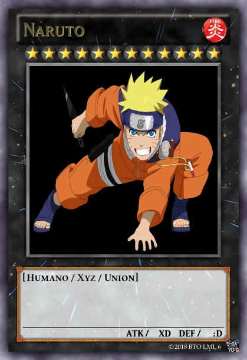
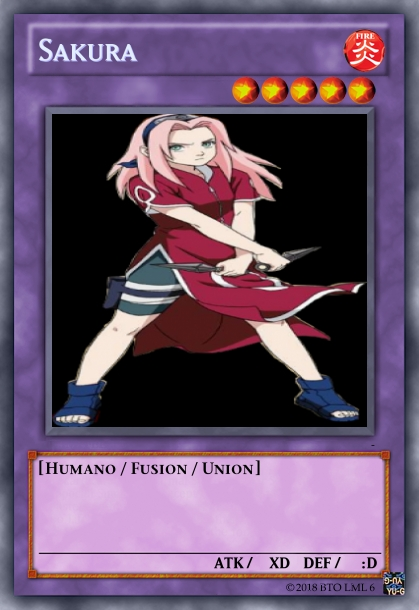
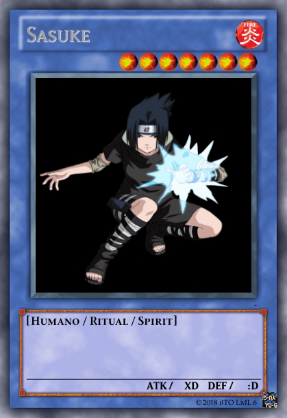
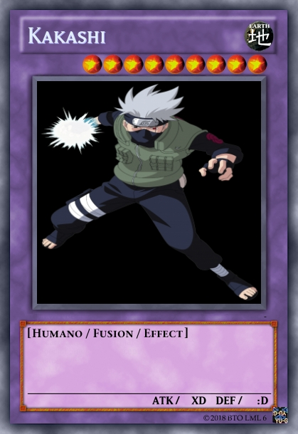

Es una serie de manga creada por Masashi Kishimoto y adaptada al anime por Hayato Date, que narra la historia de un ninja adolescente hiperactivo, impredecible y ruidoso llamado Naruto Uzumaki, quien aspira a convertirse afanosamente en Hokage, el máximo grado ninja en su aldea, con el propósito de ser reconocido como alguien importante dentro de la misma. La serie está basada en una one shot que Kishimoto realizó en agosto de 1997 para la revista Akamaru Jump. A partir de 1999 Naruto es publicado por la editorial Shūeisha en la edición japonesa Shōnen Jump.
El éxito del manga hizo que su trama fuera adaptada en un anime producido por los estudios Pierrot y distribuido por Aniplex, el cual fue transmitido por el canal de televisión terrestre TV Tokyo el 3 de octubre de 2002. La primera temporada duró 220 episodios, mientras que la continuación Naruto: Shippūden inició sus emisiones el 15 de febrero de 2007. Además, Estudios Pierrot ha producido 7 películas junto a varias animaciones originales en vídeo basadas en Naruto. Otras piezas de merchandising incluyen a un conjunto de novelas ligeras, videojuegos y cromos de colección desarrollados por distintas empresas.
 
 